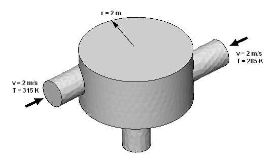
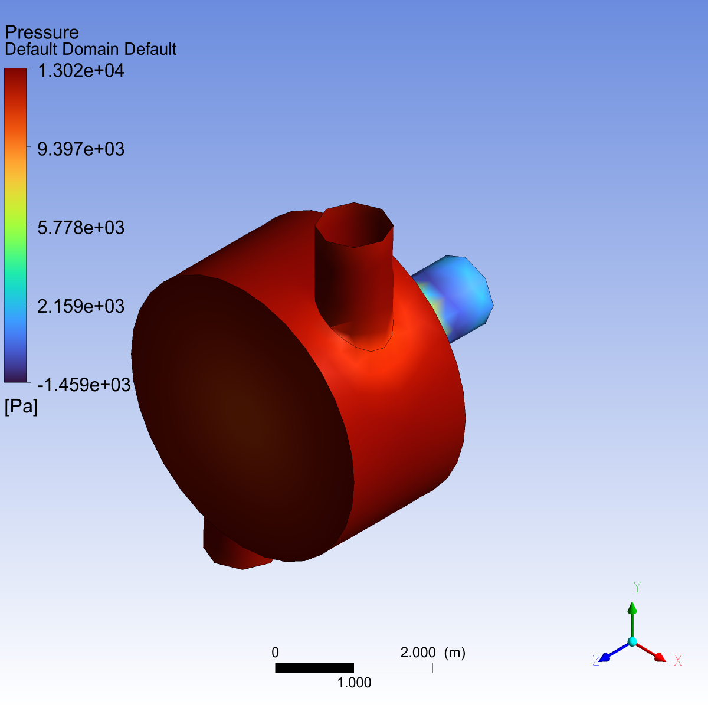
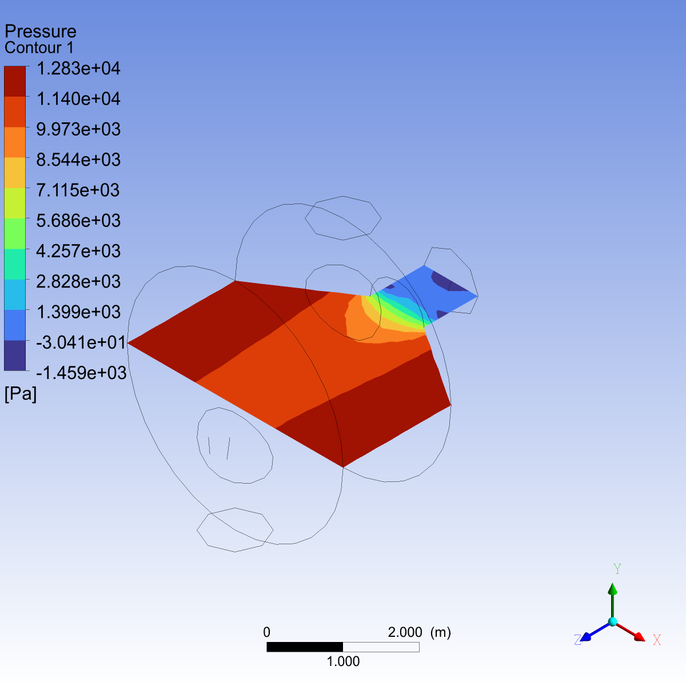

Note
Go to the end to download the full example code.
Simulate flow in a static mixer#
This basic example shows how to launch PyCFX and then set up, run, and postprocess the CFX Static Mixer tutorial case in PyCFX.
Model overview
This example simulates a static mixer with two inlet pipes delivering water into a mixing vessel. The water exits through an outlet pipe.
Water enters through both pipes at the same rate but at different temperatures. The first entry is at a rate of 2 m/s and a temperature of 315 K. The second entry is at a rate of 2 m/s and a temperature of 285 K. The mixer radius is 2 m.
Workflow tasks
The static mixer example guides you through these tasks:
Set up a basic case in a PreProcessing session (CFX-Pre).
Run the CFX-Solver.
Perform basic postprocessing in CFD-Post.
{kind=link}

Initial setup#
Perform required imports#
Perform the required imports. It is assumed that the ansys-cfx-core package has been
installed.
import os
import ansys.cfx.core as pycfx
from ansys.cfx.core import examples
Download required files#
mesh_file_name = examples.download_file(
"StaticMixerMesh.gtm",
"pycfx/static_mixer",
save_path=os.getcwd(),
)
Preprocessing#
Start a PreProcessing session (CFX-Pre) and create a new case#
pypre = pycfx.PreProcessing.from_install()
pypre.file.new_case()
Import a mesh#
The StaticMixerMesh.gtm mesh file should already have been downloaded to the current working
directory earlier in this script.
pypre.file.import_mesh(file_name=mesh_file_name)
Set up the domain#
A default domain is created automatically when a new case is created.
default_domain = pypre.setup.flow["Flow Analysis 1"].domain["Default Domain"]
default_domain.fluid_definition["Fluid 1"].material = "Water"
default_domain.domain_models.reference_pressure.reference_pressure = "1 [atm]"
default_domain.fluid_models.heat_transfer_model.option = "Thermal Energy"
default_domain.fluid_models.turbulence_model.option = "k epsilon"
Set up the boundary conditions#
Add the first inlet boundary, specifying each setting in turn.
default_domain.boundary["in1"] = {}
in1 = default_domain.boundary["in1"]
in1.boundary_type = "INLET"
in1.location = "in1"
in1.boundary_conditions.mass_and_momentum.option = "Normal Speed"
in1.boundary_conditions.mass_and_momentum.normal_speed = "2 [m s^-1]"
in1.boundary_conditions.heat_transfer.static_temperature = "315 [K]"
Add the second inlet boundary by duplicating the first.
in1_state = default_domain.boundary["in1"].get_state()
default_domain.boundary["in2"] = in1_state
in2 = default_domain.boundary["in2"]
in2.location = "in2"
in2.boundary_conditions.heat_transfer.static_temperature = "285 [K]"
Add the outlet boundary.
pypre.setup.flow["Flow Analysis 1"].domain["Default Domain"].boundary["out"] = {}
out = pypre.setup.flow["Flow Analysis 1"].domain["Default Domain"].boundary["out"]
out.boundary_type = "OUTLET"
out.location = "out"
out.boundary_conditions.mass_and_momentum.option = "Average Static Pressure"
out.boundary_conditions.mass_and_momentum.relative_pressure = "0 [Pa]"
Set up the solver#
Configure the solver control settings.
solver_control = pypre.setup.flow["Flow Analysis 1"].solver_control
solver_control.advection_scheme.option = "Upwind"
solver_control.convergence_control.timescale_control = "Physical Timescale"
solver_control.convergence_control.physical_timescale = "2 [s]"
Set up the CFX-Solver to run in parallel using execution control.
exec_control = pypre.setup.simulation_control.execution_control
exec_control.solver_step_control.parallel_environment.start_method = "Intel MPI Local Parallel"
exec_control.solver_step_control.parallel_environment.maximum_number_of_processes = 2
Check for errors#
Check for physics messages to ensure the setup is consistent and no required settings are missing.
physics_messages = pypre.setup.get_physics_messages(severity="All")
if physics_messages:
print(f"Physics messages: {physics_messages}")
Write the CFX-Solver input file#
This example uses a file-based workflow, where each of the three PyCFX components (PreProcessing, Solver, and PostProcessing) are run independently, with each component being initialized by a file written by the previous component where possible. This allows each component to be run separately, potentially on a different machine configuration, at a different time, or from a different Python session. In contrast, the Fourier Transformation Blade Flutter case example shows a workflow where the PyCFX components interact more directly.
Write the CFX-Solver input file and close the preprocessing session.
solver_input_file_name = "static_mixer.def"
pypre.file.write_solver_input_file(file_name=solver_input_file_name)
pypre.exit()
Run the solver#
Start a Solver session and launch the CFX-Solver#
Launch the CFX-Solver using the execution control settings applied in the preprocessing session. Only local CFX-Solver runs are supported.
pysolve = pycfx.Solver.from_install(solver_input_file_name=solver_input_file_name)
pysolve.solution.start_run()
Wait for the run to complete#
Wait for the run to complete and determine the results file name.
pysolve.solution.wait_for_run()
results_file = pysolve.solution.get_results_file_name()
pysolve.exit()
Postprocessing#
Start a PostProcessing session (CFD-Post)#
Start CFD-Post and load the results.
pypost = pycfx.PostProcessing.from_install(results_file_name=results_file)
Find the name of the case object that is automatically created.
case_names = pypost.results.data_reader.case.get_object_names()
if case_names:
current_case = case_names[0]
else:
raise RuntimeError("Loading results failed; no cases defined.")
Plot contours on one of the boundaries#
pypost.results.data_reader.case[current_case] = {
"boundary": {
"Default Domain Default": {
"colour_mode": "Variable",
"colour_variable": "Pressure",
"draw_contours": True,
}
}
}
current_case = pypost.results.data_reader.case[current_case]
default_boundary = current_case.boundary["Default Domain Default"]
default_boundary.show(view="/VIEW:View 1")
Create an image#
Set up the image.
hardcopy = pypost.results.hardcopy
hardcopy.hardcopy_format = "png"
hardcopy.image_height = 1200
hardcopy.image_width = 1200
hardcopy.use_screen_size = False
Save the image. Hide the boundary again so that it is not visible in subsequent images.
pypost.file.save_picture(file_name="static_mixer_boundary.png")
default_boundary.hide()
{kind=link}

Create a plane#
By default, the plane geometry recalculates every time a setting is modified. When modifying several settings sequentially, suspend the plane object to avoid unnecessary intermediate calculations. Unsuspend the plane after completing the setup to reflect the latest settings.
pypost.results.plane["Plane 1"] = {}
plane = pypost.results.plane["Plane 1"]
plane.suspend()
plane.option = "ZX Plane"
plane.plane_type = "Slice"
plane.unsuspend()
Create a contour#
Create a contour on the previously defined plane and save the image. Supplying all the settings at once by using a dictionary is another way to avoid unnecessary intermediate calculations.
pypost.results.contour["Contour 1"] = {
"colour_variable": "Pressure",
"location_list": "/PLANE:Plane 1",
"number_of_contours": 11,
"contour_range": "Local",
"draw_contours": True,
"fringe_fill": True,
}
contour = pypost.results.contour["Contour 1"]
contour.show(view="/VIEW:View 1")
pypost.file.save_picture(file_name="static_mixer_contour.png")
contour.hide()
{kind=link}

Set up an expression#
Set up and evaluate an expression.
pypost.results.library.cel.expressions = {
"Temperature Difference": {"definition": "maxVal(Temperature)@out - minVal(Temperature)@out"}
}
expressions = pypost.results.library.cel.expressions
print(f"Expressions list: {expressions.list()}")
print(f"Expression definitions: \n{expressions.list_properties()}")
temperature_difference = expressions["Temperature Difference"].evaluate()
print(f"Temperature difference: {temperature_difference}")
Close the postprocessing session#
pypost.exit()